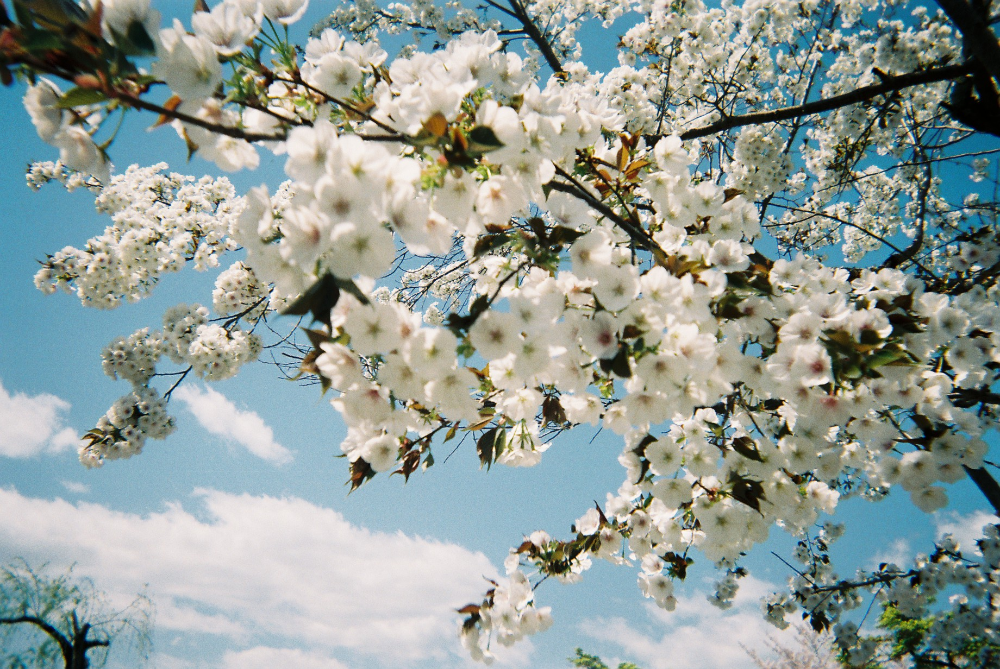
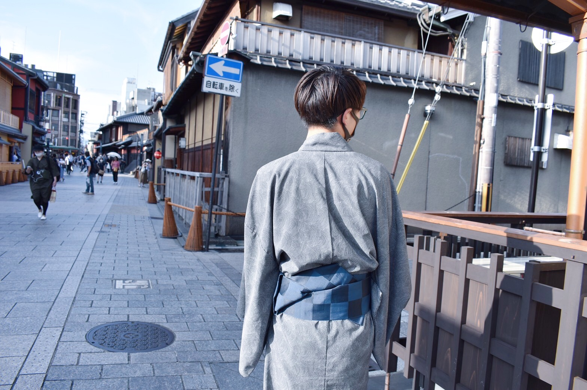

写真



「はなのぺーじ」とは、
はなの”すき”を詰め込んだ
自己紹介型ポートフォリオです。
私の今まで作ったもの、好きなものを見ていただけます。
たくさんの方々と出会って、たくさんの素晴らしい映像を
見てきました。「はなの将来やりたいことはこれだ！」と
思わせてくれました。これからも自分の”すき”を形にできる
ように、映像の勉強をしていきます。
ライフイズテックに参加してきて、
モノづくりの面白さを知れて、
本当に良かったです。